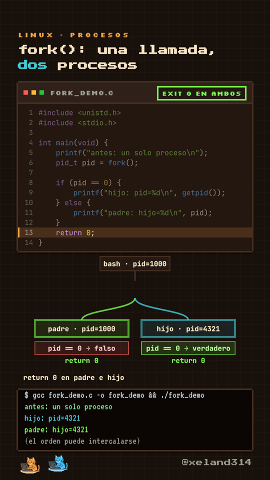
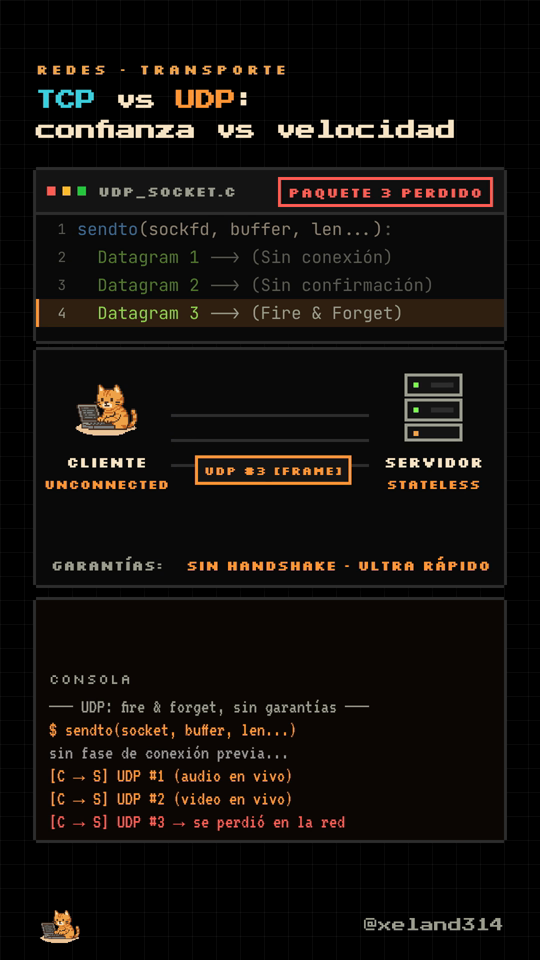
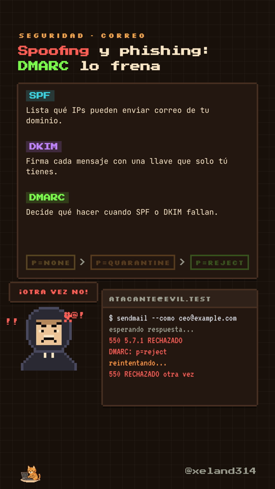

001 · fork(): una llamada, dos procesos
linux · rendered · 21s · día 1
TiInThFaYoRe

002 · Git: merge vs rebase
git · rendered · 21s · día 4
TiInThFaYoRe

003 · TCP vs UDP: confianza vs velocidad
redes · rendered · 22s · día 5
TiInThFaYoRe

004 · Spoofing y phishing: DMARC lo frena
ti · rendered · 24s · día 24
TiInThFaYoRe